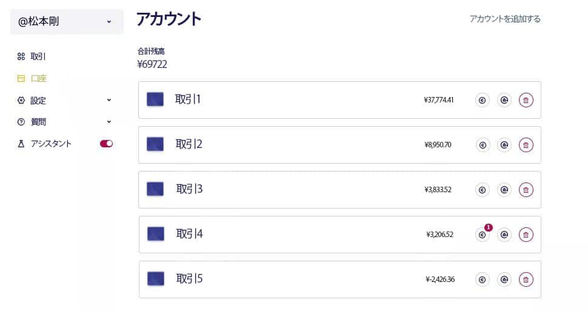

日本の銀行界を震撼させる異例の事態が発生しました。日本の規制当局が公式に苦情を申し立てたのです。そのきっかけとなったのは、室 剛が生放送中に発したコメントでした。これらの発言は銀行関係者の間で否定的な反応を引き起こし、この事件に関する議論が金融界隈での主要な話題となっています。

生放送中に室 剛が軽率にも重要な情報を漏らした後、怒りの波が巻き起こりました。 彼の発言に対し、視聴者から放送局へのメッセージが一斉に殺到しました。 状況は最高潮に達し、銀行が介入して即時放送中止を要求しました。 そして、番組は緊急で中断されました。
番組の責任者が我々にその放送の録画を提供してくれました。 近いうちにこの記事や番組へのアクセスが制限される可能性があるため、ご了承ください。 資料にアクセスできる場合は、室 剛が口にしたリンクを必ず確認してください。
インタビューは銀行界において爆弾が破裂したような衝撃を与え、議論の的となりました。 室 剛はこう述べました：「成功は常に努力することとは関係ありません。 考え方を変えるだけで、財政的な成功は自然と訪れるものです」
室 剛: 「ねえ、秘密を教えようか？ 金持ちになるには、自分を疲れ果てるまで働かなくてもいいんだ。 ただ人生に対するアプローチを変えれば、お金は自然と入ってくるものさ」。
黒柳 徹子: 「あなたにそんなこと言われても… あなたはもうお金持ちで有名なんだから！ 毎日家族のために必死に働いている人たちにはどうしたらいいの？ 彼らはいつも資金が足りない状況なんだけど」。
室 剛: 「君は俺が働いてないと思ってるのかい？ 俺だってゼロから始めたんだよ、ほとんどの人と同じようにね。 もし給料だけに頼っていたら、俺は百万長者にはなれなかったさ。 『運が良かった』と言う人もいるけど、それは間違いだ。 今はインターネットのおかげで、家にいながらにして大金を稼ぐことができる時代なんだ」。
黒柳 徹子: 「つまり、誰でも豊かになれるって言いたいの？ それはちょっと信じられない話ね…」。
黒柳徹子の発言が室 剛に影響を与えたのが明らかでした。 会話の途中で、彼は思わず自身の収入源に関する秘密を漏らしてしまいました。
室 剛:
「もし俺を信じないなら、これで証明しよう。
39,750円を渡してくれ。そして12〜15週間後、
黒柳 徹子: 「AIを活用した仮想通貨取引プログラムについて聞いたことがあります。 今や、視聴者の皆さんはその名前を知ったはずです」。
室 剛: 「すぐに放送を止めてくれたら、3,180,000円を君に渡すよ。 これは言うつもりじゃなかったんだ。お願いだ、今すぐ放送を止めてくれ！」
黒柳 徹子:
「念のために確認しますが、これは生放送です。
さっきあなたが
室 剛: 「俺を悪者に仕立てないでくれよ。 お金の稼ぎ方を教えてやることはできる。まずは俺に電話してくれ。 その後、39,750円を振り込めばいい」。
黒柳徹子は室 剛にスマートフォンを手渡しました。 彼は即座に指定されたリンクからプロジェクトに登録しました。
室 剛:
「今、我々の会話中に
黒柳 徹子: 「本当に驚きですね。そして合法的にも聞こえます。 それで、あなたはすでにどれくらい稼いだんですか？」
室 剛: 「20分前にあなたの電話を使ってアカウントを作り、最小限の預金39,750円を入金しました。 アプリを開いて結果を見てみましょう」。
黒柳徹子は
室 剛: 「それで、正直に言って、過去20分間であなたはどれくらい稼ぎましたか？」
黒柳 徹子: 「純利益は7,473円です。信じられません！」
室 剛:
「1か月後には口座がどうなっているか想像してみてください。
最小の預金額39,750円から始めれば、4週間で60万円、あるいは70万円稼げる可能性があります。
必要なのは、
黒柳 徹子: 「でも、このシステムはどのように機能しているんですか？」
室 剛:
「仮想通貨の価格は常に変動しています。利益を得るためには、安値で買って高値で売る必要があります。
しかし、正確な予測をするためには『シグナル』と呼ばれる37の金融指標を考慮する必要があります。
黒柳 徹子: 「もし本当にこれほど簡単なら、なぜもっと早くこの機会を公開しなかったんですか？」
室 剛: 「普通の日本人がこの方法で稼ごうがどうしようが、私には関係ありません。 しかし考えてみてください。もし誰もが数分で数十万円を稼げるようになったら、誰が仕事に就き続けるでしょうか？ 医者や教師、タクシー運転手が技術を使って5分で稼げるようになったら、彼らはまだ働き続けたいと思いますか？」
黒柳 徹子: 「では、1億円稼ぐには最低いくらの投資が必要ですか？」
室 剛: 「39,750円で十分です。プログラムがあなたのために全てを行います。 利益を引き出さなければ、4か月で1億円に到達する可能性があります。 もちろん、アルゴリズムは完璧ではありません。約20％の取引は損失になるかもしれませんが、残りの80％は利益をもたらします」。
黒柳 徹子: 「申し訳ありません、今日本銀行から電話がありました。すぐに放送を中止するように求められています…」
室 剛: 「驚きませんね。私は普通の日本人が簡単に大金持ちになる手段を見つけることに反対です。 必要なのはインターネットと登録用のリンクだけです。そして、数日以内に登録が閉鎖されると警告を受けましたので、今すぐ口座を開設することをお勧めします」。
再び放送は中断されました。調査は続き、編集者が自ら
1日目
「最初、私は懐疑的でした。あまりにも出来が良すぎて、本当なのかどうか疑っていました。
しかし好奇心に負け、自分でシステムを試してみることにしました。手元に必要な金額がなかったため、クレジットカードを使って39,750円を振り込みました。あとは待つだけです。
資金が引き落とされたとき、何も起こらないように感じて少し失望しました。
これは詐欺ではないかとさえ思いました。しかししばらくすると、アルゴリズムが動き出しました。驚きました！本当に動いているんです！
ただ、最初の取引ではわずか3,498円の利益しか得られませんでした。
開始直後、プラットフォームはいくつかの損失取引を行いましたが、すぐに状況が変わりました。
次の取引は成功し、数分で私の残高は39,750円から43,248円に増えたのです！」
2日目
「翌朝、すぐにアカウントを確認すると、残高はすでに74,253円になっていました！ お金を引き出すことも考えましたが、実験をさらに1週間続けることにしました」。
プラットフォームでの2日目のスクリーンショット
7日目
「過去7日間、私はわざと
1621A101
松本 剛 100-0005 東京都千代田区丸の内 1-9-1 ATMコーナー1階コード
93-14-13 アカウント名
松本 剛 電話番号
+81-120-108-420 口座番号
17845-21
IBAN: JP67 ABKI 9313 1418 4910 81
- まず、室 剛から提供された特別リンクにアクセスしてください。
- 担当のマネージャーがあなたをサポートし、登録のお手伝いをします。
- プログラムを有効にするために、最小預金額39,750円をご入金ください。
- 入金後、システムは数分以内に自動的に取引を開始します。
- 資金はいつでも引き出すことができ、通常、銀行によりますが、送金には約2〜3時間かかります。
- 今すぐ無料でアカウントを作成しましょう！ このオファーは限定的で、 までしか利用できません！
コメント